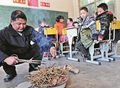

<div id="news">
    <div class="Q-tpList">
        <a target="_blank" class="pic" href="/a/20150209/003871.htm">
            </a>
        <em class="f14 l24"><a target="_blank" class="linkto" href="/a/20150209/003871.htm">南昌一小学仅2名老师8名学生 靠杂草生火取暖</a></em>
        <p class="l22">招贤镇牛岭小学距湾里城区22公里，是湾里区最偏远、落后的小学之一，
            现在拥有8个学生，2个老师。学生居住分散，上学路途遥远，
            离校最远的学生要走上2个多小时的山路。</p>
    </div>
</div>